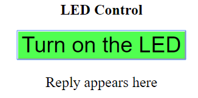
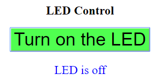

//修改藍色部分
/*
yourRouterSSID
yourRouterPassward
IPGGx-
*/
//開啟手機熱點分享
//打開WiFi搜尋IPGGx-後之IP
//打開瀏覽器連入IP
#include <ESP8266WebServer.h>
#define ssid "yourRouterSSID" //手機熱點分享SSID
#define password "yourRouterPassward" //手機熱點分享密碼
#define LED_Pin 2
ESP8266WebServer server(80);
String html = R"=====(
<!DOCTYPE html>
<html>
<head>
<meta name='viewport' content='width=device-width, initial-scale=1.0'/>
<meta charset='utf-8'>
<style>
body {text-align: center;}
input {font-size: 36px;background-color: #50FF50;}
p {font-size: 24px;}
</style>
<script>
var aReq = null;
if (window.XMLHttpRequest)
{ aReq =new XMLHttpRequest(); }
else
{ aReq =new ActiveXObject("Microsoft.XMLHTTP"); }
function switchLED()
{
var button_text = document.getElementById("LED_button").value;
if (button_text=="Turn on the LED")
{
ajaxLoad('LEDON');
}
else if(button_text=="Turn off the LED")
{
ajaxLoad('LEDOFF');
}
}
function ajaxLoad(ajaxURL)
{
if(!aReq)
{ alert("AJAX is not supported.");
return;
}
aReq.onreadystatechange = function()
{
if(aReq.readyState == XMLHttpRequest.DONE)
{
var ajaxResult = aReq.responseText;
if ( ajaxResult == "LED is on" )
{
document.getElementById("LED_button").value = "Turn off the LED";
document.getElementById("reply").style.color = "#ff0000";
}
else if ( ajaxResult == "LED is off" )
{ document.getElementById("LED_button").value = "Turn on the LED";
document.getElementById("reply").style.color = "#0000ff";
}
document.getElementById("reply").innerHTML = ajaxResult;
}
}
aReq.open("GET",ajaxURL,true);
aReq.send();
}
</script>
<title>LED Control</title>
</head>
<body>
<h2>LED Control</h2>
<input type="button" id = "LED_button" onclick="switchLED()" value="Turn on the LED" />
<p id = "reply">Reply appears here</p>
</body>
</html>
)=====";
void handleRoot() {
digitalWrite(LED_Pin,HIGH);
server.send(200, "text/html", html);
}
void handleLEDON() {
digitalWrite(LED_Pin, LOW);
server.send(200, "text/plain", "LED is on");//esp-->aReq
/*ESP server送出"LED is on" 給client 端 (由代理人ajaxRequst收)
即: 代理人aReq 會收到 "LED is on" (aReq.responseText)
*/
}
void handleLEDOFF() {
digitalWrite(LED_Pin, HIGH);
server.send(200, "text/plain", "LED is off");
}
void setup()
{
pinMode(LED_Pin, OUTPUT);
digitalWrite(LED_Pin,HIGH);
WiFi.begin(ssid,password);
while (WiFi.status() != WL_CONNECTED)
{
delay(500);
}
WiFi.mode(WIFI_AP_STA);
WiFi.softAP(String("IPGGx-"+ String((WiFi.localIP().toString()))),"");
digitalWrite(LED_Pin,LOW);
server.on("/", handleRoot);
server.on("/LEDON", handleLEDON);
server.on("/LEDOFF", handleLEDOFF);
server.begin();
}
void loop() {
server.handleClient();
}
| 程式執行流程: 1. browser 輸入 192.168.xxx.xxx (espIP) 根據server.on("/", handleRoot); 交由handleRoot()處理:請求ESP server 送出網頁  2. click button -->觸發onclick 根據: <input type="button" id = "LED_button" onclick="switchLED()" value="Turn on the LED" /> 交由 switchLED() 處理 3. switch():取得目前button上的字-->"Turn on the LED" 執行: ajaxLoad('LEDON'); aReq.open("GET",'LEDON',true); aReq.send(); 送出LEDON給ESP server 相當於在網址列輸入 http://espIP/LEDON 4. ESP server 收到espIP\LEDON 根據: server.on("/LEDON", handleLEDON); 交由handleLEDON()處理: 1. ESP server 將LED_Pin (GPIO2)設為低電位(點亮) digitalWrite(LED_Pin, LOW); 2. ESP server送出"LED is on" 給client server.send(200, "text/plain", "LED is on"); 5. esp server 送出LED is on 觸發client 端 aReq.onreadystatechange 事件 由aReq.onreadystatechange = function(){....} 處理 此時 ajaxResult == "LED is on" 1. 將button 字改為:"Turn off the LED" 2. 將回應字style.color 改為紅色 3. 將回應字改為:LED is on  2a. click button -->觸發onclick 根據: <input type="button" id = "LED_button" onclick="switchLED()" value="Turn on the LED" /> 交由 switchLED() 處理 3a. switch():取得目前button上的字-->"Turn off the LED" 執行: ajaxLoad('LEDOFF'); aReq.open("GET",'LEDOFF',true); aReq.send(); 送出LEDOFF給ESP server 相當於在網址列輸入 http://espIP/LEDOFF 4a. ESP server 收到espIP\LEDOFF 根據: server.on("/LEDOFF", handleLEDOFF); 交由handleLEDOFF()處理: 1. ESP server 將LED_Pin (GPIO2)設為高電位(熄滅) digitalWrite(LED_Pin, HIGH); 2. ESP server送出"LED is off" 給client server.send(200, "text/plain", "LED is off"); 5a. esp server 送出LED is off 觸發client 端 aReq.onreadystatechange 事件 由aReq.onreadystatechange = function(){....} 處理 此時 ajaxResult == "LED is off" 1. 將button 字改為:"Turn on the LED" 2. 將回應字style.color 改為藍色 3. 將回應字改為:LED is off  |